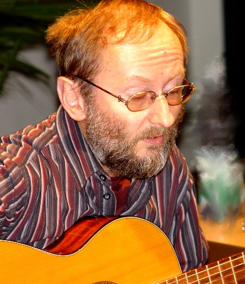
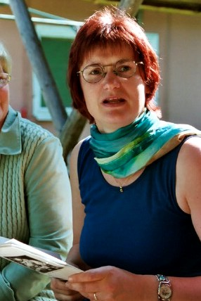
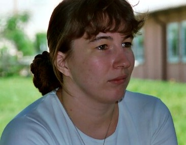

Vorstand
Stand: Mitgliederversammlung 15. November 2025 – Amtszeit 2 Jahre



Aus der Geschichte des Vereins
Die Gründungsversammlung fand am 10. März 1990 im Heinrichser Rathaus statt, auf der auch die Satzung angenommen wurde. Der Eintrag ins Vereinsregister des damaligen Kreisgerichts Suhl erfolgte unter der Nummer 71 am 13. August 1990. 1996 wurde eine Satzungsänderung zur Sicherstellung der Gemeinnützigkeit vorgenommen, die am 16. Juli 1997 vom Amtsgericht Suhl bestätigt wurde. Eine weitere Satzungsänderung aufgrund veränderter gesetzlicher Bestimmungen gab es 2015.
Die erste Gemeinnützigkeitsbescheinigung lag unter der Steuer-Nr. 171/141/08278 vom 6. Januar 1997 vor. Aktuell liegt mit Schreiben des Finanzamtes Suhl vom 18. Dezember 2025 der Freistellungsbescheid für 2022–2024 vor (Befreiung von der Körperschafts- und Gewerbesteuer wegen des gemeinnützigen Zweckes Förderung von Kunst und Kultur).
Vereinszweck & Arbeitsweise
Der Zweck des Vereines besteht laut Satzung „in der Förderung literarisch tätiger und interessierter Bürger, die sich dem künstlerischen Wort verbunden fühlen" – z.B. in der Unterstützung von Schreibenden durch Lektorierung ihrer Arbeiten. Gesellschaftlicher Hintergrund der Vereinsgründung war, den zahlreichen Schreibenden der Region, die bisher v.a. in „Zirkeln schreibender Arbeiter" in Betrieben oder beim Kulturbund Unterstützung fanden, eine neue Begegnungsmöglichkeit zu schaffen. Bewusst blieb der Verein Plattform für haupt- und nebenberufliche Autoren.
Die Zusammenkünfte erfolgen derzeit etwa im Zweimonatsrhythmus. Daneben bietet der Verein einmal im Vierteljahr in Suhl den „Literatursalon" als Podium für Literatur an – eine öffentliche Lesemöglichkeit für Autoren und Gelegenheit zu Textarbeit. Der vormalige eigenständige Verein „Literatursalon Suhl" wurde vom Südthüringer Literaturverein übernommen, einschließlich Veranstaltungen und Mitglieder.
Der Verein veranstaltet eine jährliche Lesereihe mit durchschnittlich vier öffentlichen Lesungen – v.a. in der Rimbachbuchhandlung Suhl mit Schwerpunkt auf neuer Thüringer Literatur – sowie beteiligt sich an vielen weiteren literarischen Veranstaltungen in Suhl und der Region (Lesungen, Literaturwettbewerbe, Beteiligung am „Provinzschrei" von Anfang an). Thüringenweit trat der Verein 1996/97 durch Ausschreibung des Walter-Werner-Lyrik-Wettbewerbes in Erscheinung.
Der Verein ist seit 2007 Mitglied im Thüringer Literaturrat.
Finanzierung
Wesentliche Eigenart des Südthüringer Literaturvereins ist es, dass er vollständig ehrenamtlich arbeitet. Die Finanzierung erfolgt v.a. durch Förderung des Freistaats Thüringen sowie Drittmittel von Stadt Suhl und Rhön-Rennsteig-Sparkasse, durch Eintrittsgelder und Mitgliedsbeiträge. Spenden sind jederzeit willkommen!
Vereinskonto: Interessengemeinschaft Künstlerisches Wort Südthüringen e.V. · IBAN DE81 8405 0000 1755 0000 70 · BIC HELADEF1RRS · Rhön-Rennsteig-Sparkasse
Mitglieder mit Einzelveröffentlichungen (Auswahl)
Ursula Schütt, Felicitas Kretschmann, Harald Lindig, Horst Wiegand, Erika Westhäuser, Holger Uske, Heidi Büttner, Michael Carl, Brunhilde Schüler, Silvio Schubert, Sabine Purfürst, Margrit Thies, Brigitte Rost, Peter Drescher, Peter Deil u.a.

Lesung zu den Werkstatttagen 2008 im Literaturmuseum Baumbachhaus Meiningen.
→ Übersicht Literaturverein · Vereinspublikationen · Aktuelle Termine